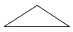
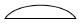
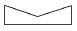
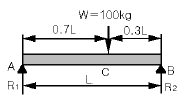

자동차차체수리기능사 (2006-04-02 기출문제)
1과목: 자동차공학
1. 가솔린기관의 연소실체적이 행정체적의 20%이다. 이기관의압축비는?
- 6 : 1
- 5 : 1
- 8 : 1
- 7 : 1
(정답률: 54%)

2. 파워트랜지스터에서접지되는단자는?
- 이미터
- 베이스
- 컬렉터
- B(+)
(정답률: 74%)
3. 25kgf의 물체를 5m로 올리는데 2초 걸렸다면 필요한마력(PS)은?
- 0.5
- 0.63
- 0.75
- 0.83
(정답률: 47%)
4. 전자제어가솔린엔진의 분사방식으로 가장 적절치 못한 것은?
- 순차분사
- 병렬분사
- 동시분사
- 그룹분사
(정답률: 69%)
5. 공기브레이크의구성부품이아닌것은?
- 공기 압축기
- 브레이크 체임버
- 브레이크 휠 실린더
- 퀵 릴리스 밸브
(정답률: 54%)
6. 전자제어 현가장치에 사용되는 쇽업소버에서 오일이 상하 실린더로 이동할 때 통과하는 구멍을 무엇이라고 하는가?
- 밸브 하우징
- 로터리 밸브
- 오리피스
- 스텝구멍
(정답률: 71%)
7. 구동피니언 이링기어중심선 밑에서 물리게 되어있는 기어는?
- 직선베벨 기어
- 스파이럴 기어
- 스퍼어 기어
- 하이포이드 기어
(정답률: 74%)
8. 전자제어 분사장치에서 기본 분사시간을 결정할 때 입력받는 신호는?
- 스로틀 포지션 센서, 수온 센서
- 엔진 회전수, 수온 센서
- 흡입 공기량 센서, 엔진 회전수
- 흡입 공기량 센서, 스로틀 포지션 센서
(정답률: 63%)
9. 다음 중 기관이 과열하는 원인에 속하지 않는 것은?
- 냉각 팬의 파손
- 냉각수 흐름 저항 감소
- 엔진의 과부하
- 냉각수 이물질 혼입
(정답률: 82%)
10. 자동변속기 차량에서 시동이 가능한 변속레버 위치는?
- P, N
- P, D
- 전 구간
- N, D
(정답률: 87%)
11. 윤활유의 구비 조건이 아닌 것은?
- 비중이 적당할 것
- 인화점 및 발화점이 낮을 것
- 점성과 온도와의 관계가 양호할 것
- 카본 생성이 적으며 강인한 유막을 형성하여 쉽게 산화 하지 말 것
(정답률: 84%)
12. 자동차용 LPG연료의 특성이 아닌 것은?
- 연소효율이 좋고 엔진이 정숙하다.
- 엔진 수명이 길고 오일의 오염이 적다.
- 대기오염이 적고 위생적이다.
- 옥탄가가 낮으므로 연소 속도가 빠르다.
(정답률: 82%)
13. 자동차용 교류발전기에서 응용한 것은?
- 플레밍의 왼손법칙
- 플레밍의 오른손법칙
- 옴의 법칙
- 자기포화의 법칙
(정답률: 74%)
14. 연료펌프 라인에 고압이 걸릴 경우 연료의 누출이나 배관이 파손되는 것을 방지하는 것은?
- 사일렌서(silencer)
- 체크 밸브(check valve)
- 안전밸브( relief valve)
- 축압기(accumulator)
(정답률: 85%)
15. 자동차 용납산축전지의 방전종지전압은 보통 어느 정도에 해당되는가?
- 1.1~1.2V
- 1.4~1.5V
- 1.7~1.8V
- 2.0~2.2V
(정답률: 53%)
16. 기관의 피스톤지름이 60mm, 크랭크축의 회전 반지름이30mm, 압축비가 9일 경우 연소실체 적으로 맞는 것은?
- 12.2cm3
- 16.4cm3
- 18.4cm3
- 21.2cm3
(정답률: 33%)
17. 전기자 시험기로 시험할수 있는 것과 가장거리가 먼 것은?
- 코일의 단락
- 코일의 저항
- 코일의 접지
- 코일의 단선
(정답률: 56%)
18. 기관의 회전력을 액체의 운동에너지로 바꾸고이 에너지를 다시 동력으로 바꾸어 변속기에 전달하는 클러치는?
- 다판 클러치
- 단판 클러치
- 유체 클러치
- 리어 클러치
(정답률: 82%)
19. 휠얼라인먼트에서 앞차축과 뒤차축의 평행도에 해당하는 것은?
- 셋백(set back)
- 토인(toe-in)
- 킹핀 경사각( kin g pin inclination)
- 조향각(ste ering axis inclination)
(정답률: 59%)
20. 4행정 4실린더 기관의 점화순서가 1-3-4-2일 경우, 1번 실린더가 압축행정을 할 때 3번 실린더는 어떤 행정을 하는가?(오류 신고가 접수된 문제입니다. 반드시 정답과 해설을 확인하시기 바랍니다.)
- 흡기행정
- 압축행정
- 배기행정
- 폭발행정
(정답률: 66%)
2과목: 자동차차체정비
21. 강철은 200∼300℃에서 연신률이 최저로 되고 강도는 최고로 되는 이른바 여리고 약하게 되는데 이러한 성질을 무엇이라고 하는가?
- 청열 취성
- 적열 취성
- 저온 취성
- 고온 취성
(정답률: 58%)
22. 패널의 뒷면에 밀어 넣고 해머와 병행하여사용하기도하며, 해머의 대용으로 패널을 두드릴때 사용하는 것은?
- 샌더
- 돌리
- 서폼
- 보디 파일
(정답률: 82%)
23. 균일 분포하중을 받고있는 양단지 지보의 굽힘모멘트 선도는어느 것인가?



(정답률: 71%)
24. 패널을 평면 수정작업시 사용되는 공구와 거리가 먼 것은?
- 스푼
- 슬라이드 해머
- 에어 톱
- 돌리
(정답률: 67%)
25. 트렁크 도어의 구조는 프레스 가공한 얇은 강판으로 안쪽에서 프레임을 포개어 점 용접한 것이다. 이때에 트렁크 도어 개폐시 균형을 잡기 위해 쓰이는 것은 무엇인가?(오류 신고가 접수된 문제입니다. 반드시 정답과 해설을 확인하시기 바랍니다.)
- 트렁크 도어 힌지
- 토션바
- 도어 로크
- 도어첵
(정답률: 63%)
26. 철강의 분류는 무엇에 의해 하는가?
- 조직
- 성질
- 탄소량
- 제작법
(정답률: 85%)
27. 프레임의 점검용 게이지로 프레임에 3개 또는 4개 정도를 걸어 프레임의 변형을 관측하는 게이지의 명칭은?
- 센터링 게이지
- 트램 게이지
- 테이프 게이지
- 유니버셜 게이지
(정답률: 57%)
28. 다음 트램 트랙킹 게이지로 차체의 각부를 측정하는 곳이 아닌 것은?
- 프런트 사이드 멤버
- 로어 암과 후드레지 위치 점검
- 프레임 이그러진 상태 점검
- 프레임의 균열부위 점검
(정답률: 55%)
29. 얕게 커브진 특수해머이며, 머리가 둥글게 되어 있고 거친 부분깊은 곳까지 작업하는 해머는?
- 라버 헤드 해머
- 딘킹 해머
- 리버스 커브 해머
- 펜더 범핑 해머
(정답률: 65%)
30. K.S 규격 중 기계제도 부분은 어디에 해당 하는가?
- KS B
- KS D
- KS C
- KS A
(정답률: 72%)
31. 고장력 강판은 몇℃ 이상에서 고장력의 특성을 잃어버리는가?
- 500
- 600
- 700
- 800
(정답률: 73%)
32. 도장작업을 하기전에 샤워방식으로 표면처리를 하는 것을 무엇이라 하는가?
- 크리닝
- 파커라이징
- 워싱
- 아나라이징
(정답률: 48%)
33. 보디 프레임 수정기 중 바퀴가 달려 차체정비를 한 차량까지 자유로이 이동시켜 작업장 바닥이나 기둥 등에 고정하지 않아도 되는 것은?
- 이동식 보디 프레임 수정기
- 폴식 보디 프레임 수정기
- 정치식 보디 프레임 수정기
- 바닥식 보디 프레임 수정기
(정답률: 91%)
34. 다음은 보의그림이다. 이때 A와B에 생기는 반력은 각각 얼마인가?

- A = 30kgf, B = 70kfgf
- A = 70kgf, B = 30kfgf
- A = 40kgf, B = 60kfgf
- A = 60kgf, B = 40kfgf
(정답률: 53%)
35. 전기 아크용접에서 케이블이 가늘거나 너무 길면 어떤 현상이 생기는가?
- 전류 부족
- 전압 강하
- 아크 저하
- 전하 저하
(정답률: 70%)
36. 다음 중 프레임 센터링 게이지의 설치 방법 중 틀린 것은?
- 게이지 1개가 1조이다.
- 차체 프레임의 행거 로드의 높이를 수평으로 조절하여건다.
- 게이지를 부착하려면 게이지 훅, 스프링 훅,마그네틱을 사용 할수있다.
- 비대칭 차체와 좌ㆍ우 대칭인 차체를 구분해야한다.
(정답률: 81%)
37. 보디 패널의 凹 면과 골이 파진면의 좁은 곳을 작업하는데 적합한 샌더(sander)의 이름은?
- 디스크 샌더
- 벨트 샌더
- 기타 샌더
- 스트레이트 라인 샌더
(정답률: 80%)
38. 나사의 표시 방법 중 포함되지 않는 것은?
- 나사의 호칭
- 나사의 등급
- 나사산의 감긴 방향
- 나사의 강도
(정답률: 66%)
39. 두께12mm, 길이60cm, 고정 단의 폭40cm의 3각 판스프링의 처짐을 2cm까지 허용다면 가할 수 있는 최대 하중은 몇 kgf인가?
- 120
- 224
- 321
- 425
(정답률: 64%)
40. 자동차 보수도장에 있어 도료의 건조장치 중 가장 바람직한 것은?
- 복사 대류에 의한 열풍 건조장치
- 복사에 의한 고온 다습한 열풍 건조장치
- 습도가 많은 상온에서의 자연 건조장치
- 고온 다습한 실내에서의 자연 건조장치
(정답률: 87%)
3과목: 안전관리
41. 저항 용접인 점 용접(spot welding)에서 행하여 지지 않는 시간은 어느 것인가?
- 스퀴즈 타임(squeeze time)
- 스페어 타임(spare time)
- 윌드 타임(weld time)
- 솔드 타임(sold time)
(정답률: 66%)
42. 화학 청정제의 종류중에서 효력이 상실되었을때 공기 중에서 햇빛에 건조하면 재 사용이 가능한 청정제는?
- 카타리졸
- 마카린
- 헤라졸
- 플랑크린
(정답률: 53%)
43. 금속도장에 관한 내용 중 틀린 것은 무엇인가?
- 물체 보호는 도장 최대의 목적이다.
- 아크릴 수지는 천연 수지를 용제에 용해시켜 만든것으로도 막이 약하다.
- 프라이머의 주목적은 부착 및 방청이다.
- 실러는 찌그러지거나 오무러드는 것을 방지하며, 흡입방지를 하는데 사용된다.
(정답률: 70%)
44. 보의 회전은 자유로우나 수평 이동이 불가능한지점이 있다. 이때지점에 전달할 수있는 반력은 어느 것인가?
- 수직 반력 1개와 수평 반력 1개
- 수직 반력 2개와 수평 반력 1개
- 수직 반력 1개와 수평 반력 2개
- 수직 반력 2개와 수평 반력 2개
(정답률: 50%)
45. 다음 중 우리나라에서 단일체 구조 보디 프레임이 가장 많이 쓰이는 차종은?
- 소형 승용차
- 소형 화물차
- 대형 승용차
- 특수차
(정답률: 82%)
46. 탄소강에서 냉간 압연강판 표시 기호는?
- SCP
- SHP
- SS
- SBB
(정답률: 78%)
47. 강판을 늘리거나 줄이는 가공을 하면 소성 변형을 일으켜 재질이 단단해지는 것을 무엇이라고 하는가?
- 열변형
- 탄성
- 가공경화
- 청열 취성
(정답률: 84%)
48. CO2용접 방법 중 용입 부족의 결함 사항이 발생하였을때 원인이 아닌 것은?
- 용접 겹침이 너무 좁다.
- 용접 전류가 낮다.
- 와이어 공급률이 너무 빠르다.
- 모재에 과다한 산소가 공급되었다.
(정답률: 68%)
49. 모노코크 차체에 충돌이 있을 때 센터라인 상의 변형은 어떤 것인가?
- 다이아몬드
- 새그
- 사이드웨이
- 트위스트
(정답률: 69%)
50. 순철에는 3개의 동소체가 있는데 여기에 해당되지 않는 것은?
- α철
- β철
- γ철
- δ철
(정답률: 76%)
51. 오일 팬 내 기관 오일의 양은 어떤상태에서 측정하는 것이 제일 좋은가?
- 정지상태
- 공전운전상태
- 고속운전상태
- 중속운전상태
(정답률: 81%)
52. 임팩트렌치의 사용시 안전수칙으로 거리가 먼 것은?
- 렌치 사용시 헐거운 옷은 착용하지 않는다.
- 위험요소를 항상 점검한다.
- 에어호스를 몸에 감고 작업을 한다.
- 가급적 회전부에 떨어져서 작업을 한다.
(정답률: 92%)
53. 기관에서 크랭크축의 휨을 측정시 가장 적합한 것은?
- 스프링저울과 브이블록
- 버니어캘리퍼스와 곧은자
- 마이크로미터와 다이얼게이지
- 다이얼게이지와 브이블록
(정답률: 73%)
54. 렌치 사용시의 안전 및 주의 사항 중 틀린 것은?
- 렌치는 볼트 너트를 풀거나 조일 때 볼트 머리나 너트에 꼭 끼워져야한다.
- 렌치가 짧을 때에는 파이프 등의 연장대를 끼워서 사용하야야한다.
- 조정 조에 잡아당기는 힘이 가해져서는 안된다.
- 렌치를 잡아 당겨 작업한다.
(정답률: 90%)
55. 차량에서 축전지 취급시 유의 사항이 아닌 것은?
- 축전지를 충전할 때는 이산화탄소가 발생하기 때문에 환기가 잘되는 곳에서 충전을 해야한다.
- 축전지를 충전할 때 극성에 주의를 해야한다.
- 축전지 충전시 전해액의 온도가 45℃가 넘지 않도록해야 한다.
- 축전지를 차량에 설치할 때는 (+)케이블부터 연결하는 것이 일반적인 원칙이다.
(정답률: 53%)
56. 다음 중 인화성 물질이 아닌 것은?
- 아세틸렌 가스
- 가솔린
- 프로판가스
- 산소
(정답률: 86%)
57. 아세틸렌 용기 내의 아세틸렌은 게이지 압력이 얼마 이상되면 폭발할 위험이 있는가?
- 0.2kgf/cm2
- 0.6kgf/cm2
- 0.8kgf/cm2
- 1.5kgf/cm2
(정답률: 72%)
58. 브레이크의 파이프내에 공기가들어가면 일어나는 현상으로 가장 적당한 것은?
- 브레이크 오일이 냉각된다.
- 오일이 마스터 실린더에서 샌다.
- 브레이크 페달의 유격이 크게 된다.
- 브레이크가 지나치게 급히 작동한다.
(정답률: 82%)
59. 운반차를 이용한 운반 작업에 대한 사항 중 잘못 설명한 것은?
- 여러 가지 물건을 쌓을 때는 가벼운 물건을 위에 올린다.
- 차의 동요로 안정이 파괴되기 쉬울 때는 비교적 무거운 물건을 위에 쌓는다.
- 화물이나 운반차에 사람의 탑승은 절대 금한다.
- 긴 물건을 실을 때는 맨 끝 부분에 위험 표시를 해야한다.
(정답률: 91%)
60. 다음 중 동력 및 전달 장치에서 가장 재해가 많은 것은?
- 차축
- 기어
- 피스톤
- 벨트
(정답률: 80%)
압축비는 행정체적 : 연소실체적으로 나타내는데, 이를 역수로 바꾸면 연소실체적 : 행정체적이 된다.
따라서, 연소실체적 : 행정체적 = 1 : 5 에서 연소실체적 : 행정체적 = 1/5 : 1 이다.
압축비는 이를 간단하게 나타낸 것으로, 분자와 분모를 모두 6으로 나누면 연소실체적 : 행정체적 = 1/5 : 1 은 6/30 : 1/30 으로 나타낼 수 있다.
따라서, 압축비는 6 : 1 이다.